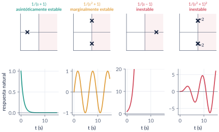
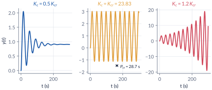
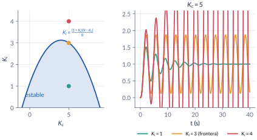
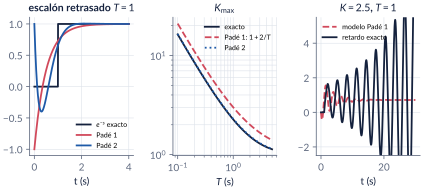
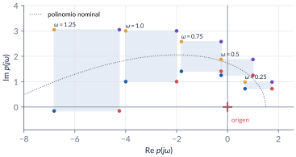
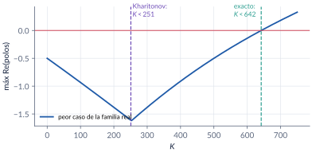

5. Estabilidad
Semana 6 · dos clases
Antes de preguntar cómo llega la salida a la referencia hay que preguntar si llega. En esta parte definimos con cuidado qué es un equilibrio estable, vemos por qué todo lo decide la ubicación de los polos, y aprendemos el criterio de Routh-Hurwitz, que cuenta las raíces inestables sin calcularlas. Como trabaja con los coeficientes, Routh-Hurwitz sirve para diseñar: rangos de ganancia, ganancia y frecuencia críticas, regiones de un PI. Vemos también cómo tratar un tiempo muerto con la aproximación de Padé, y cuánto se equivoca. Terminamos con la estabilidad en el espacio de estado y con la robustez: el teorema de Kharitonov reduce infinitas verificaciones a cuatro.
Al terminar esta parte usted podrá
- Distinguir estabilidad asintótica, marginal y BIBO, y decidirla a partir de los polos o de los valores propios.
- Aplicar el criterio de Routh-Hurwitz, incluidos sus dos casos especiales.
- Usar la tabla para diseñar: rango de ganancia, \(\Kcr\) y \(\wcr\), regiones de estabilidad de un PI y estabilidad relativa.
- Analizar un lazo con tiempo muerto mediante la aproximación de Padé y reconocer su error.
- Decidir la estabilidad de un equilibrio en el espacio de estado, también linealizando, y reconocer los modos que la función de transferencia esconde.
- Verificar la estabilidad robusta con el teorema de Kharitonov y reconocer cuándo el resultado es conservador.
Ruta de las clases
| Clase | Qué se ve | Handout | Scripts |
|---|---|---|---|
| 1 | Qué es estabilidad; modos y polos; historia; condición necesaria; tabla de Routh; casos especiales | §5.1–5.4 | C5_Ej1–C5_Ej3 |
| 2 | Rango de ganancia, \(\Kcr\) y \(\wcr\); planta inestable; región de un PI; estabilidad relativa; tiempo muerto y Padé; espacio de estado y linealización; Kharitonov | §5.5–5.8 | C5_Ej4–C5_Ej8, crearModelo_LazoPI, crearModelo_Retardo |
Lo esencial, en una página
Estabilidad y polos
La estabilidad es una propiedad del equilibrio. Con \(\Tlc(s)=N(s)/D(s)\) sin cancelaciones:
- asintóticamente estable (y BIBO) si y solo si todos los polos tienen parte real negativa;
- marginalmente estable si no hay polos en el semiplano derecho y los del eje imaginario son simples;
- inestable si hay polos con parte real positiva o polos repetidos sobre el eje imaginario.
Los ceros no intervienen.

Marginal no es BIBO
\(1/(s^2+1)\) ante \(\sin t\) da \(\tfrac12(\sin t-t\cos t)\), que crece sin límite. En diseño, “estable” quiere decir siempre asintóticamente estable.
Criterio de Routh-Hurwitz
Para \(a_0s^n+a_1s^{n-1}+\cdots+a_n=0\) se arma la tabla
\[ \begin{array}{c|cccc} s^n & a_0 & a_2 & a_4 & \cdots\\ s^{n-1} & a_1 & a_3 & a_5 & \cdots\\ s^{n-2} & b_1 & b_2 & \cdots\\ \vdots \end{array} \qquad b_1=\frac{a_1a_2-a_0a_3}{a_1},\quad b_2=\frac{a_1a_4-a_0a_5}{a_1},\ \dots \]
El número de raíces con parte real positiva es el número de cambios de signo en la primera columna. Condición necesaria: todos los coeficientes presentes y del mismo signo (suficiente solo para \(n\le2\)). Para \(n=3\): \(a_1a_2>a_0a_3\).
Los dos casos especiales
- Cero solo en la primera columna: se reemplaza por \(\epsilon>0\) pequeño y se sigue.
- Fila completa de ceros: la fila de arriba es el polinomio auxiliar \(P(s)\) (raíces simétricas respecto al origen, que se pueden calcular); se reemplaza la fila de ceros por \(\mathrm{d}P/\mathrm{d}s\).
Routh-Hurwitz para diseñar
Con un parámetro en la ecuación característica, las condiciones de la tabla dan un rango. La fila que se anula da la ganancia crítica \(\Kcr\) y el polinomio auxiliar, la frecuencia \(\wcr\) de la oscilación sostenida: los mismos números de Ziegler-Nichols (parte 8) y del margen de ganancia (parte 10). Con el cambio \(s=z-\sigma\) se exige que todos los polos estén a la izquierda de \(-\sigma\).


Tiempo muerto y Padé
Un retardo \(T\) multiplica por \(e^{-Ts}\) y la ecuación característica deja de ser un polinomio. Se aproxima con Padé:
\[ e^{-Ts}\approx\frac{1-\frac{T}{2}s}{1+\frac{T}{2}s}\ \ (n=1),\qquad e^{-Ts}\approx\frac{1-\frac{T}{2}s+\frac{(Ts)^2}{12}}{1+\frac{T}{2}s+\frac{(Ts)^2}{12}}\ \ (n=2). \]
Para \(K e^{-Ts}/(s+1)\), Padé 1 da \(-1<K<1+2/T\): el retardo estrecha el rango. Pero sobrestima: con \(T=1\) predice \(K<3\) y el límite exacto es \(2.262\) (Padé 2: \(2.292\)). Para decidir, use orden 2 o el retardo exacto (margin con InputDelay, o el bloque Transport Delay).

Routh sobre \(\det(s\Id-\Am)\)
La función de transferencia solo muestra los modos controlables y observables. \(\Am=\begin{bmatrix}0&1&0\\0&0&1\\2&1&-2\end{bmatrix}\) tiene un valor propio en \(+1\), y sin embargo con \(\Cm=[-1\;\;0\;\;1]\) la función de transferencia es \(1/(s+2)\). La estabilidad del equilibrio se decide con el polinomio característico de \(\Am\). Linealizando un sistema no lineal, si \(\Am\) es Hurwitz el equilibrio es localmente estable (método indirecto de Lyapunov).
Teorema de Kharitonov
Una familia de polinomios cuyos coeficientes varían independientemente en intervalos \([a_k^-,a_k^+]\) es robustamente estable si y solo si son Hurwitz cuatro polinomios, construidos desde el término independiente con los patrones de extremos \((-,-,+,+)\), \((+,+,-,-)\), \((-,+,+,-)\) y \((+,-,-,+)\). Si los coeficientes dependen de los mismos parámetros, el resultado es conservador.


Explorador de Routh-Hurwitz
Lazo con retroalimentación unitaria y malla abierta \(\Gma(s)=K\,N(s)/D(s)\). Escoja un lazo del handout (o escriba el suyo), mueva \(K\) y observe la tabla de Routh, los cambios de signo y los polos del lazo cerrado. El rango estable se calcula con un barrido numérico de \(K\).
Retos con el explorador
- Con el ejemplo 5.6, lleve \(K\) a \(23.83\): ¿qué fila de la tabla se anula? ¿Dónde quedan los polos?
- Con el ejemplo 5.7, busque el \(K\) que deja el polo más lento lo más a la izquierda posible. ¿Coincide con \(K\approx3.07\)?
- Con el problema 5.3, ponga \(K=-20\): ¿cuántos cambios de signo hay y dónde está el polo inestable?
- En “Propio”, escriba \(N=1\) y \(D=1\;\,7\;\,6\;\,42\;\,8\;\,56\) con \(K=0\): aparece la fila de ceros del ejemplo 5.4.
Códigos de esta parte
Los bloques salen directamente de los archivos del repositorio. Ejecute antes iniciarCurso.
La respuesta natural según los polos (§5.1).
s = tf('s');
sistemas = {1/(s + 1), 1/(s^2 + 1), 1/(s - 1), 1/(s^2 + 1)^2};
titulos = {'polo en -1', 'polos en \pm j', 'polo en +1', 'polos dobles en \pm j'};
t = linspace(0, 15, 1501);
for k = 1:4
disp(titulos{k}); disp(pole(sistemas{k}).') % ubicación de los polos
y{k} = impulse(sistemas{k}, t); % respuesta natural (impulso)
endMarginal no es BIBO.
u = sin(t); % entrada acotada a la frecuencia del polo
yr = lsim(1/(s^2 + 1), u, t); % marginal: la salida crece sin límite
max(abs(yr)) % crece como t/2: no es BIBO estableLa tabla y el conteo de cambios de signo (§5.3).
p = [1 2 3 4 5]; % s^4 + 2s^3 + 3s^2 + 4s + 5
tablaRouth(p) % imprime la tabla y cuenta los cambios de signo
roots(p) % dos raíces con parte real positiva
q = [1 1 2 8]; % todos los coeficientes positivos...
[~, cambios] = tablaRouth(q) % ... y aun así dos raíces inestables
roots(q)Casos especiales (§5.4).
p1 = [1 2 4 8 10 6];
tablaRouth(p1) % el 0 de la fila s^3 se reemplaza por epsilon
roots(p1)p2 = [1 7 6 42 8 56];
tablaRouth(p2) % la fila s^3 se anula: derivada del auxiliar
aux = [7 0 42 0 56]; % fila s^4: 7s^4 + 42s^2 + 56
roots(aux) % +-j1.414 y +-j2: también son raíces de p2
roots(p2)La función del curso tablaRouth.
function [T, cambios, notas] = tablaRouth(p, epsilon)
% TABLAROUTH Tabla de Routh-Hurwitz de un polinomio (coeficientes en orden
% descendente, como en roots/poly) y número de cambios de signo en la
% primera columna (= número de raíces con parte real positiva).
% [T, cambios, notas] = tablaRouth([1 2 3 4 5])
% Casos especiales (sección 5.4 de las notas):
% - cero en la primera columna: se reemplaza por epsilon (por defecto 1e-6);
% - fila completa de ceros: se reemplaza por la derivada del polinomio
% auxiliar (la fila anterior), que contiene las raíces simétricas.
% Sin salidas, imprime la tabla. Es numérica: para tablas con parámetros
% (K, Kc, Ki) haga la tabla a mano o con syms.
if nargin < 2, epsilon = 1e-6; end
p = p(:).'; n = numel(p) - 1; ancho = ceil((n + 1)/2);
T = zeros(n + 1, ancho);
f0 = p(1:2:end); f1 = p(2:2:end);
T(1, 1:numel(f0)) = f0; T(2, 1:numel(f1)) = f1;
notas = {}; tol = 1e-12*max(1, max(abs(p)));
for i = 2:n+1
if i > 2
a = T(i-2, :); b = T(i-1, :);
for k = 1:ancho-1
T(i, k) = (b(1)*a(k+1) - a(1)*b(k+1))/b(1);
end
end
if all(abs(T(i, :)) < tol) && i <= n % fila de ceros: polinomio auxiliar
orden = n - i + 2; % grado del auxiliar (fila i-1)
T(i, :) = T(i-1, :).*(orden - 2*(0:ancho-1));
notas{end+1} = sprintf('fila s^%d de ceros: derivada del auxiliar de grado %d', n-i+1, orden); %#ok<AGROW>
end
if abs(T(i, 1)) < tol && i <= n % cero solo en la primera columna
T(i, 1) = epsilon;
notas{end+1} = sprintf('cero en la primera columna de s^%d: se usa epsilon', n-i+1); %#ok<AGROW>
end
end
col = T(:, 1);
cambios = sum(sign(col(1:end-1)) .* sign(col(2:end)) < 0);
if nargout == 0
for i = 1:n+1
fprintf(' s^%-2d |', n-i+1); fprintf(' %10.4g', T(i, :)); fprintf('\n');
end
for k = 1:numel(notas), fprintf(' (%s)\n', notas{k}); end
fprintf(' cambios de signo en la primera columna: %d\n', cambios);
clear T
end
endRango de \(\Kc\), \(\Kcr\) y \(\wcr\) (§5.5).
s = tf('s');
G = 0.016/(3*s + 1) * 50/(30*s + 1); % camino directo (sin Kc)
H = 1/(10*s + 1); % sensor
den = conv(conv([3 1], [30 1]), [10 1]); % 900s^3 + 420s^2 + 43s + 1
% ecuación característica: 900s^3 + 420s^2 + 43s + (1 + 0.8 Kc) = 0
Kcr = (420*43/900 - 1)/0.8 % fila s^1 = 0 -> 23.83
wcr = sqrt((1 + 0.8*Kcr)/420) % auxiliar 420s^2 + (1+0.8Kcr) = 0
Pcr = 2*pi/wcr
[GM, PM, wgm] = margin(G*H) % GM = Kcr, wgm = wcrEstabilizar una planta inestable.
P = 1/((s - 1)*(s^2 + 2*s + 2)); % planta inestable
for K = [2.9 3.2 3.48 3.6]
T = feedback(K*(s + 2)/(s + 3)*P, 1);
fprintf('K = %4.2f max Re(polos) = %+.4f\n', K, max(real(pole(T))));
end
% Routh: K > 3 (fila s^0) y K^2 + 16K - 68 < 0 (fila s^1) -> 3 < K < 3.4891
Kmax = -8 + 2*sqrt(33)Región de estabilidad de un PI.
Kc = linspace(-1, 9, 201);
Kimax = (1 + Kc).*(9 - Kc)/8; % frontera de la fila s^1
fig = estiloFigura(1000, 440);
subplot(1, 2, 1);
fill([Kc fliplr(Kc)], [Kimax zeros(size(Kc))], [0.85 0.9 1]); hold on;
plot([5 5 5], [1 3 4], 'o', 'MarkerFaceColor', 'auto');
xlabel('K_c'); ylabel('K_i'); title('región estable'); grid on;Padé de orden 1 y 2 contra el retardo exacto (§5.6).
T = 1; s = tf('s'); G = 1/(s + 1);
[n1, d1] = pade(T, 1) % (1 - Ts/2)/(1 + Ts/2)
[n2, d2] = pade(T, 2) % orden 2: c = [1 1/2 1/12]
Kmax1 = 1 + 2/T % Routh sobre (T/2)s^2 + (1+T/2-KT/2)s + 1+K
% Padé 2: buscamos el K en el que aparece un cambio de signo
Ks = linspace(0.1, 5, 4901); estable = false(size(Ks));
for k = 1:numel(Ks)
p = conv([1 1], d2) + Ks(k)*[0 n2]; % (s+1) d2(s) + K n2(s)
[~, cambios] = tablaRouth(p); estable(k) = (cambios == 0);
end
Kmax2 = Ks(find(estable, 1, 'last'))
% Exacto: margin con el retardo (InputDelay)
Gr = tf(1, [1 1], 'InputDelay', T);
[GM, ~, wgm] = margin(Gr) % GM = Kmax exacto, wgm = frecuenciaEl modelo de Padé 1 dice estable; el lazo real no.
K = 2.5; t = linspace(0, 30, 3001);
yExacto = step(feedback(K*Gr, 1), t); % retardo exacto
yPade1 = step(feedback(K*tf(n1, d1)*G, 1), t); % modelo de Padé 1
fig = estiloFigura(900, 400);
plot(t, yPade1, '--', t, yExacto); grid on; ylim([-2.5 5]);
legend('modelo de Pad\''e 1 (estable)', 'retardo exacto (inestable)'); xlabel('t (s)');Valores propios y polinomio característico (§5.7).
A = [0 1 0; 0 0 1; -6 -11 -6];
eig(A) % -1, -2, -3: A es Hurwitz
poly(A) % s^3 + 6s^2 + 11s + 6
tablaRouth(poly(A)) % lo mismo, sin calcular las raícesEl modo inestable escondido.
Au = [0 1 0; 0 0 1; 2 1 -2]; B = [0; 0; 1]; C = [-1 0 1];
eig(Au) % 1, -1, -2: el equilibrio es INESTABLE
G = minreal(tf(ss(Au, B, C, 0))) % 1/(s+2): ¡parece estable!Los dos equilibrios del péndulo.
gl = 9.81; b = 0.5; % theta'' = -(g/l) sin(theta) - b theta'
for th = [0 pi]
J = [0 1; -gl*cos(th) -b]; % jacobiano evaluado en el equilibrio
fprintf('theta* = %4.2f -> valores propios:', th); disp(eig(J).');
endLos cuatro polinomios y un muestreo aleatorio (§5.8).
bajo = [1 4 3 1]; alto = [2 5 4 2]; % a3 s^3 + a2 s^2 + a1 s + a0
P = kharitonov(bajo, alto) % cuatro filas = cuatro polinomios
esHurwitz = @(p) all(real(roots(p)) < 0);
robusto = all(arrayfun(@(k) esHurwitz(P(k, :)), 1:4))
% Muestreo aleatorio: 2000 polinomios de la familia
N = 2000; peor = -inf;
for k = 1:N
p = bajo + rand(1, 4).*(alto - bajo);
peor = max(peor, max(real(roots(p))));
end
peor % < 0, pero no es una PRUEBARango robusto de ganancia y conservadurismo.
% (s^2 + r1 s + r2)(r3 s + 1) + K = r3 s^3 + (r1 r3 + 1)s^2 + (r2 r3 + r1)s + (r2 + K)
for K = [200 250 300]
bajo = [1 7 106 100 + K]; alto = [2 15 247 120 + K];
P = kharitonov(bajo, alto);
fprintf('K = %3d: Kharitonov ->', K); fprintf(' %d', arrayfun(@(k) esHurwitz(P(k, :)), 1:4)); fprintf('\n');
end
% La familia real (r1, r2, r3 entran en varios coeficientes a la vez):
[r1, r2, r3] = ndgrid(linspace(6, 7, 6), linspace(100, 120, 6), linspace(1, 2, 11));
Kreal = min(r1(:).*r2(:).*r3(:) + r1(:).^2 + r1(:)./r3(:)) % 642La función del curso kharitonov.
function P = kharitonov(bajo, alto)
% KHARITONOV Los cuatro polinomios de Kharitonov de una familia de intervalo.
% P = kharitonov(bajo, alto)
% bajo, alto: coeficientes mínimos y máximos en orden DESCENDENTE
% (como en roots/poly): [a0 a1 ... an] para a0 s^n + ... + an.
% P: matriz 4 x (n+1); cada fila es un polinomio en orden descendente.
% Se construyen desde el término independiente hacia arriba con los
% patrones (-,-,+,+), (+,+,-,-), (-,+,+,-), (+,-,-,+) que se repiten.
% La familia es robustamente estable si y solo si las cuatro filas son Hurwitz:
% all(arrayfun(@(k) all(real(roots(P(k,:))) < 0), 1:4))
patrones = [0 0 1 1; 1 1 0 0; 0 1 1 0; 1 0 0 1]; % 0 = mínimo, 1 = máximo
lo = fliplr(bajo(:).'); hi = fliplr(alto(:).'); % ascendente: an, a(n-1), ...
m = numel(lo); P = zeros(4, m);
for k = 1:4
usarAlto = logical(patrones(k, mod(0:m-1, 4) + 1));
asc = lo; asc(usarAlto) = hi(usarAlto);
P(k, :) = fliplr(asc);
end
endverificarCap05 comprueba los números clave del capítulo.
function verificarCap05()
% VERIFICARCAP05 Pruebas automáticas de los números del capítulo 5.
% >> verificarCap05
% (Los mismos números se verificaron con sympy y python-control en
% herramientas/cap05_numeros.py.)
raiz = fileparts(mfilename('fullpath'));
addpath(fullfile(raiz, '..', 'comun'));
fallas = 0; n = 0;
function revisar(nombre, valor, esperado, tol)
n = n + 1;
if abs(valor - esperado) <= tol
fprintf(' ok %-42s %12.4f\n', nombre, valor);
else
fprintf(2, ' FALLA %-41s %12.4f (esperado %g +- %g)\n', nombre, valor, esperado, tol);
fallas = fallas + 1;
end
end
nInestables = @(p) sum(real(roots(p)) > 1e-9);
esHurwitz = @(p) all(real(roots(p)) < 0);
fprintf('5.3 Routh\n');
[~, c] = tablaRouth([1 2 3 4 5]); revisar('s^4+2s^3+3s^2+4s+5: cambios', c, 2, 0);
revisar(' raíces inestables', nInestables([1 2 3 4 5]), 2, 0);
revisar(' parte real', max(real(roots([1 2 3 4 5]))), 0.2878, 1e-4);
[~, c] = tablaRouth([1 1 2 8]); revisar('s^3+s^2+2s+8: cambios', c, 2, 0);
[~, c] = tablaRouth([1 2 3 4]); revisar('s^3+2s^2+3s+4: cambios', c, 0, 0);
fprintf('5.4 Casos especiales\n');
[~, c] = tablaRouth([1 2 4 8 10 6]); revisar('caso 1: cambios', c, 2, 0);
revisar(' raíces inestables', nInestables([1 2 4 8 10 6]), 2, 0);
[T, c] = tablaRouth([1 7 6 42 8 56]); revisar('caso 2: cambios', c, 0, 0);
revisar(' fila s^3 = [28 84]', T(3, 2), 84, 1e-9);
revisar(' fila s^1', T(5, 1), 28/3, 1e-9);
revisar(' |raíz| mayor en el eje', max(abs(imag(roots([1 7 6 42 8 56])))), 2, 1e-6);
[~, c] = tablaRouth([1 0 0 0 4]); revisar('s^4+4: cambios', c, 2, 0);
[~, c] = tablaRouth([1 2 1 2]); revisar('s^3+2s^2+s+2: cambios', c, 0, 0);
fprintf('5.5 Diseño\n');
Kcr = (420*43/900 - 1)/0.8; revisar('Kcr (tres primer orden)', Kcr, 23.8333, 1e-4);
revisar('wcr', sqrt((1 + 0.8*Kcr)/420), 0.21858, 1e-5);
revisar('margin GM = Kcr', margin(tf(0.8, [900 420 43 1])), Kcr, 1e-3);
revisar('Kmax planta inestable', -8 + 2*sqrt(33), 3.4891, 1e-4);
revisar('K = 3.2 estable', esHurwitz([1 4 3 3.2-2 2*3.2-6]), 1, 0);
revisar('K = 3.6 inestable', esHurwitz([1 4 3 3.6-2 2*3.6-6]), 0, 0);
revisar('PI frontera Kc=5', (1 + 5)*(9 - 5)/8, 3, 1e-12);
revisar('PI (5,1) estable', esHurwitz([1 4 5 12 2]), 1, 0);
revisar('PI (5,4) inestable', esHurwitz([1 4 5 12 8]), 0, 0);
revisar('PI w frontera', sqrt(2*3/((9 - 5)/2)), 1.7321, 1e-4);
revisar(' Kc = 10/3: polo en -0.05', max(real(roots([900 420 43 1+0.8*10/3]))), -0.05, 1e-6);
revisar(' Kc = 17/64: polo en -0.05', max(real(roots([900 420 43 1+0.8*17/64]))), -0.05, 1e-6);
fprintf('5.6 Tiempo muerto (Padé)\n');
ck = @(n, k) factorial(2*n-k)*factorial(n)/(factorial(2*n)*factorial(k)*factorial(n-k));
revisar('Padé 2: c2 = 1/12', ck(2, 2), 1/12, 1e-12);
revisar('Padé 1, T=1: K < 1+2/T', 1 + 2/1, 3, 0);
T = 1; d2 = [ck(2,2)*T^2 ck(2,1)*T 1]; n2 = [ck(2,2)*T^2 -ck(2,1)*T 1];
Ks = linspace(2, 2.5, 50001);
ok = arrayfun(@(K) all(real(roots(conv([1 1], d2) + K*[0 n2])) < 0), Ks);
revisar('Padé 2, T=1: Kmax', Ks(find(ok, 1, 'last')), 2.2915, 1e-3);
w = fzero(@(w) w*T + atan(w) - pi, [0.1 3]);
revisar('exacto T=1: w', w, 2.0288, 1e-4);
revisar('exacto T=1: Kmax', sqrt(1 + w^2), 2.2618, 1e-4);
w = fzero(@(w) w*1 + atan(w/2) - pi, [0.1 3]);
revisar('(s+2), T=1: Kmax exacto', sqrt(4 + w^2), 3.0396, 1e-4);
revisar('(s+2), K=2.5: Tmax exacto', (pi - atan(1.5/2))/1.5, 1.6654, 1e-4);
fprintf('5.7 Espacio de estado\n');
revisar('eig A (máx)', max(real(eig([0 1 0; 0 0 1; -6 -11 -6]))), -1, 1e-9);
Au = [0 1 0; 0 0 1; 2 1 -2];
revisar('modo escondido: max eig', max(real(eig(Au))), 1, 1e-9);
G = minreal(tf(ss(Au, [0; 0; 1], [-1 0 1], 0)));
revisar(' orden de la FT', numel(pole(G)), 1, 0);
revisar(' polo de la FT', pole(G), -2, 1e-6);
revisar('péndulo arriba', max(eig([0 1; 9.81 -0.5])), 2.8921, 1e-4);
fprintf('5.8 Kharitonov\n');
P = kharitonov([1 4 3 1], [2 5 4 2]);
revisar('pausa: 4 polinomios Hurwitz', sum(arrayfun(@(k) esHurwitz(P(k, :)), 1:4)), 4, 0);
revisar('K1 = a0- + a1- s + a2+ s^2 + a3+ s^3', P(1, 1)*1000 + P(1, 2)*100 + P(1, 3)*10 + P(1, 4), 2531, 0);
P = kharitonov([1 6 16 30 35 26], [1.1 6.4 18.6 44.4 61 50]);
revisar('ejemplo 1: polinomios Hurwitz', sum(arrayfun(@(k) esHurwitz(P(k, :)), 1:4)), 1, 0);
c = conv([1 2 2], [1 4 6 20]) + [0 0 0 0 5 10];
revisar(' vértice (1,4,6,20,5) inestable', esHurwitz(c), 0, 0);
P = kharitonov([1 7 106 100+251], [2 15 247 120+251]); % = Kharitonov(caja)
revisar('diseño K=251: el cuarto, en el borde', max(real(roots(P(4, :)))), 0, 1e-6);
P = kharitonov([1 7 106 100+300], [2 15 247 120+300]);
revisar('diseño K=300: alguno falla', sum(arrayfun(@(k) esHurwitz(P(k, :)), 1:4)), 3, 0);
[r1, r2, r3] = ndgrid(linspace(6, 7, 6), linspace(100, 120, 6), linspace(1, 2, 11));
revisar('diseño: K real máximo', min(r1(:).*r2(:).*r3(:) + r1(:).^2 + r1(:)./r3(:)), 642, 1e-9);
revisar(' K=641 en el peor vértice', esHurwitz([1 7 106 100+641]), 1, 0);
revisar(' K=643 en el peor vértice', esHurwitz([1 7 106 100+643]), 0, 0);
fprintf('\n%d de %d pruebas correctas.\n', n - fallas, n);
endModelos de Simulink
Los modelos se construyen por código
| Script | Modelo | Para qué |
|---|---|---|
crearModelo_LazoPI.m |
PI en forma paralela, \(\Gc=\Kc+K_i/s\), con la planta \(2/(s^3+4s^2+5s+2)\) | recorrer la región de estabilidad: un punto adentro, uno en la frontera y uno afuera; medir el periodo de la oscilación sostenida |
crearModelo_Retardo.m |
el lazo \(K e^{-Ts}/(s+1)\) dos veces: con Transport Delay y con Padé de primer orden | encontrar la ganancia a la que cada uno empieza a oscilar y ver que Padé 1 es optimista |
Corra el script y se crea el .slx.
Pausas activas
1. Clasifique
- \(\dfrac{s-3}{(s+1)(s+4)}\); (b) \(\dfrac{1}{s(s+2)}\); (c) \(\dfrac{s+1}{(s^2+4)^2}\).
Respuesta
- Asintóticamente estable: el cero en \(+3\) no importa. (b) Marginal: polo simple en el origen (un escalón da una rampa). (c) Inestable: polos dobles en \(\pm2j\).
2. Sin tabla
¿Son estables \(s^3+2s^2+3s+4\) y \(2s^3+s^2+3s+4\)?
Respuesta
El primero sí: \(2\cdot3=6>1\cdot4\). El segundo no: \(1\cdot3=3<2\cdot4=8\).3. Ganancia crítica
Para \(\Gma(s)=\dfrac{K}{s(s+1)(s+2)}\) con retroalimentación unitaria, halle el rango de \(K\), \(\Kcr\) y \(\wcr\).
Respuesta
\(s^3+3s^2+2s+K=0\): \(0<K<6\). En \(\Kcr=6\) el auxiliar \(3s^2+6=0\) da \(\wcr=\sqrt2=1.414\) rad/s.4. Kharitonov en tercer orden
\(a_3\in[1,2]\), \(a_2\in[4,5]\), \(a_1\in[3,4]\), \(a_0\in[1,2]\) en \(a_3s^3+a_2s^2+a_1s+a_0\). ¿Es robustamente estable?
Respuesta
Sí. En tercer orden basta el peor caso de \(a_2a_1>a_3a_0\): \(4\cdot3=12>2\cdot2=4\).Problemas
El handout trae 10 problemas (tablas y casos especiales, ganancia crítica, ganancias negativas y Bode, región de un PI con estabilidad relativa, tiempo muerto con Padé y el error de la aproximación, estabilidad local de un sistema no lineal, matrices Hurwitz y modos escondidos, una familia de cuarto orden y una planta incierta), con soluciones seleccionadas.
Correcciones respecto a la versión anterior
En la aproximación de Padé, \(c_k\) lleva \((2n)!\) en el denominador; se agregó la comparación con el límite exacto, que muestra que Padé de primer orden es optimista. La estabilidad depende solo de los polos, no de los ceros. \(s^3+2s^2+s+2\) es un caso de fila de ceros, no de \(\epsilon\). Se resolvieron los ejemplos que no tenían solución; en el primer ejemplo de Kharitonov faltaba un intervalo y la familia no es robustamente estable; el diseño robusto da \(-100<K<251\) con Kharitonov y \(K<642\) con la dependencia entre coeficientes. Hurwitz publicó su criterio en 1895; la anécdota del sirviente es de lord Kelvin, no de Maxwell.